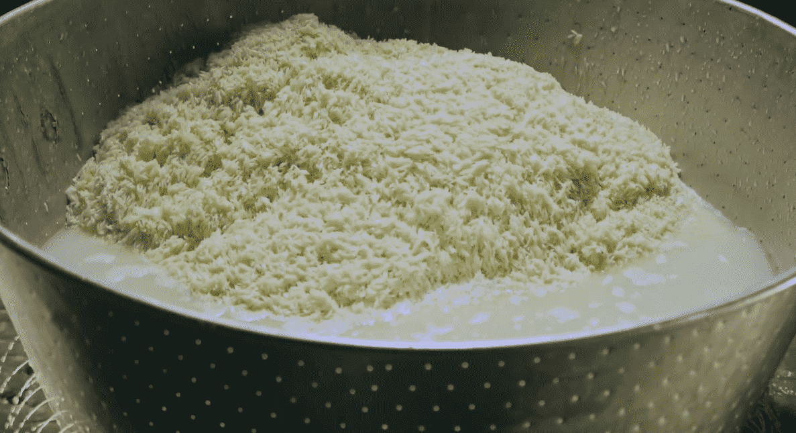
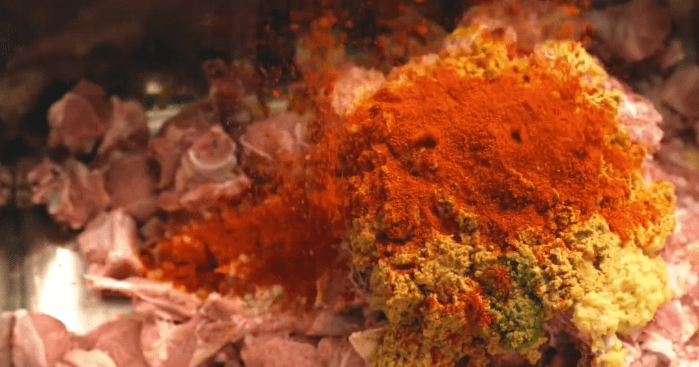
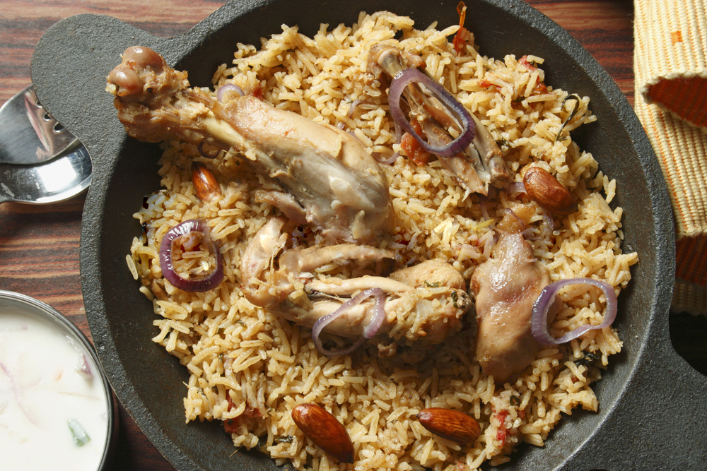

Home
(current)
Menu
Chef
Reservation
Location
Biryani is a celebraion of all that is great about Indian food! The aromas, the vibrant colour, that fluffy long-grained basmati rice.

Arab Street Restaurant
The Beginning

Arab Street Restaurant
A New Challenge

menu
chef
reservation
location
99-6666-1177
Serving with 🖤 by ARAB STREET